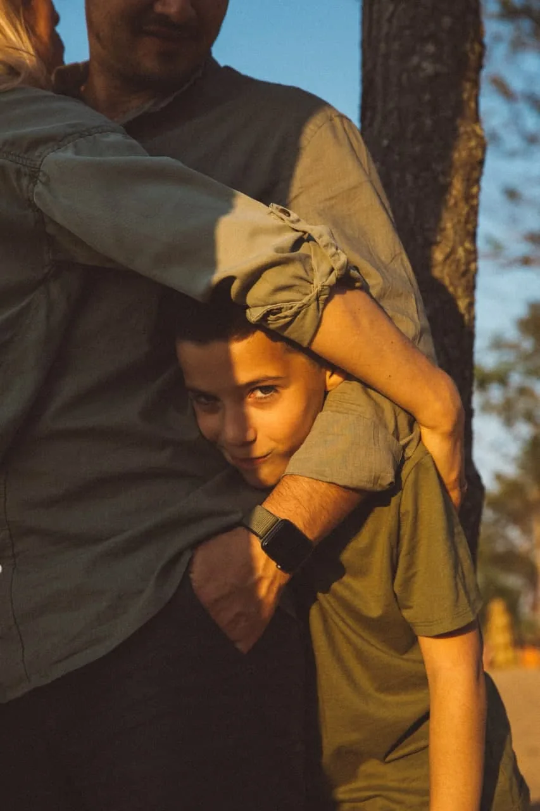

Вернуться в момент
5-4-3-2-1: заметить то, что вокруг. Отвечать ничего не нужно.
- Найди глазами пять вещей, которые видишь.
- Прислушайся к четырём звукам.
- Прикоснись к трём предметам.
- Заметь два запаха.
- Почувствуй один вкус.
Всё остаётся на твоём устройстве
Мои упражнения — без записи и регистрации. Можно открыть в любое время, даже ночью.
Тело
когда накрывает и нужно вернуться в себя
Мысли
когда крутится одно и то же и хочется посмотреть со стороны
Связи
когда не хватает слов для близких — и для себя
Не знаешь, с чего начать? Как ты сейчас?
Подберу порядок практик под тебя.
Один выбор, без оценок.
Если хочется уточнить — что сейчас громче?
Минута, чтобы вернуться в тело. Дыши, как удобно: остановиться можно в любой момент.
Ритм
без задержек, самый мягкий
Сколько
Вдох на 3 — выдох на 6
Если кружится голова или неприятно — сократи паузу или просто дыши в своём ритме.
Практика — возможность, а не ещё одно задание.
5-4-3-2-1: заметить то, что вокруг. Отвечать ничего не нужно.
Найти, где в теле живёт усталость, и услышать, что она говорит.
Выписать всё, что крутится, и запечатать до завтра.
Если накрывает рядом с малышом. Пять шагов, по одному на экран.
Вернуться в сегодняшний день. Тихо, без анимаций.
Когда сил на выбор мало — выберу я.
Три минуты, четыре шага — способ посмотреть на мысль чуть со стороны.
Двенадцать привычных поворотов мысли. Нажми на карточку, чтобы перевернуть.
Слова для трудных разговоров — бери как есть или переделай под себя.

Пожалуйста, возьми коляску и погуляй с малышом полтора часа. Мне нужно спокойно принять душ и полежать в тишине.
Я тревожусь, что весь быт ляжет на меня. Мне важно знать, что мы разделим это время.
Мне сейчас не нужно, чтобы ты искал решения или успокаивал меня. Мне нужно, чтобы ты обнял меня, посидел рядом и дал мне поплакать.
Мне плохо. Я не справляюсь. Пожалуйста, приезжай как можно скорее и побудь с малышом пару часов.
Мама, мы очень ценим твою заботу и опыт. Но мы следуем рекомендациям нашего врача. Если понадобится совет — обязательно спросим. А сейчас очень поможет, если ты посидишь с малышом, пока мы пообедаем.
Это наша личная тема. Когда будет чем поделиться — мы расскажем сами.
Мы будем рады видеть вас чуть позже. Сейчас больше всего поможет готовая еда у двери и сообщение вместо звонка.
Спасибо за заботу. Мы с педиатром уже выбрали, как будем делать, — если понадобится совет, мы спросим.
Мне неприятно, когда трогают мой живот без разрешения.
Спасибо, но я не хочу обсуждать набранные килограммы.
Спасибо за беспокойство. У меня непредвиденные семейные обстоятельства, и я не готова это обсуждать. Давай вернёмся к проекту.
Про планы на декрет я пока говорить не готова. Когда будет понятно, я сама расскажу руководителю.
Я знаю, что ты хочешь меня поддержать, но эти слова сейчас делают мне очень больно. Пожалуйста, не говори так. Мне сейчас легче, если мы просто помолчим вместе.
У нас случилось несчастье, мы потеряли ребёнка. Нам сейчас очень тяжело. Пожалуйста, не звоните и не задавайте вопросов. Мы сами выйдем на связь, когда будем готовы.
У меня произошла тяжёлая личная утрата. Я возьму больничный или отгулы до [числа], чтобы восстановиться. Очень прошу не рассказывать подробности коллективу.
Коллеги, моя беременность прервалась. Мне сейчас очень больно говорить об этом. Самая большая помощь для меня — не поднимать эту тему и дать мне просто работать. Спасибо за понимание.
Схема просьбы: «Когда [что происходит], я чувствую [чувство], потому что мне важно [потребность]. Можешь, пожалуйста, [одно конкретное действие]?»
Короткие фразы, на которые можно опереться, когда своих слов не хватает. Вытяни одну — или столько, сколько нужно.
Мой Telegram-бот — для дней между встречами.
В боте отвечает ИИ-ассистент в духе моего подхода — не я и не врач. Мне лично можно написать в Telegram: @irinaoshemetkova.
Практика помогает в моменте
Понять, откуда берётся тревога или усталость и что поможет именно тебе, — этим мы и занимаемся на встречах.
Записаться на консультациюПрактики не заменяют медицинскую помощь.